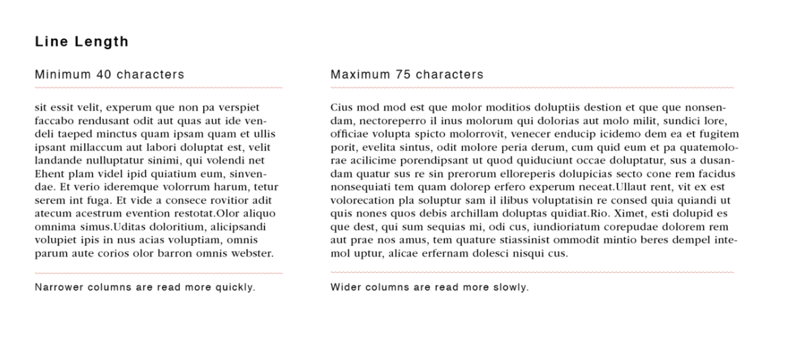
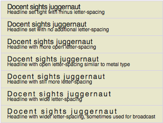

Typography
A presentation by Daniel Sedrick
What is it?
- Typography – The style and appearance of printed matter
- A technique or art form of arranging type to make written languages legible.
Why Typography?
- Primarily – Readability! Allows the client to read our content.
- As well, typography allows us to display our content in creative and enticing ways that are pleasing to the human eye.
Important Points of Typography
Font
- The way our texts looks (Serif, Times New Roman, Helvetic)
Point Size
- The sizing of our text
Line Length
Leading, Kerning, and Tracking
Principles of Typography
Leading
Leading is the space between lines. Many of us have already practiced this with double spacing our essays.

Tracking
Space Between Letters
Kerning
Specific Lettering